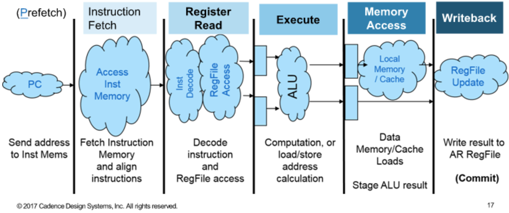
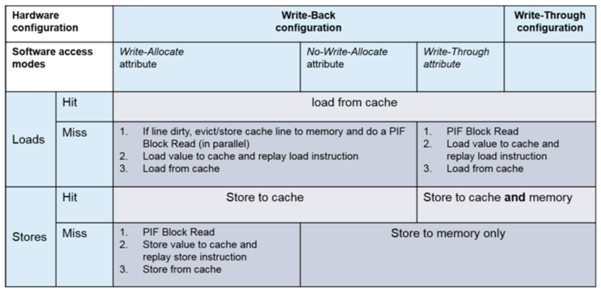
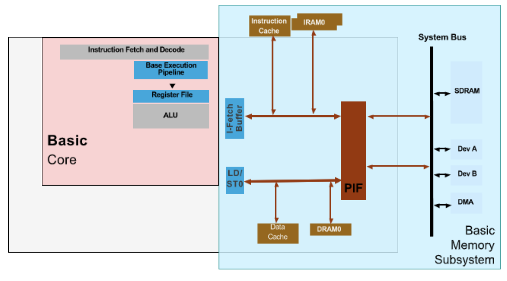
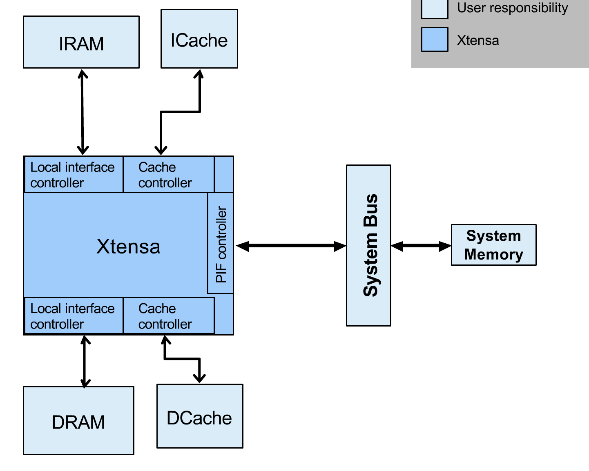

Tensilica Processor Fundamentals v7.4
Xtensa architecture training
- Custom instructions and registers
- Parallelized instructions
- Specialized interfaces
- Ports and queues
Processor architecture basics
-
RISC architecture + harvard architecture
- Load/store
-
5 or 7 stage pipeline (configurable)
-
Single or multi issue, in-order execution
-
Big or little endian (configurable)
-
24-bit instruction + 16-bit format (save code space)
- Optional VLIW instruction, 8 bytes or 16 bytes
- No mode switching required
- Base inst # = 80
- “.N” suffix for density instructions
-
GPR # = 16 x 32-bit
- a0 … a15
- Physical registers # can be configured as 16/32/64
- Windowed register, shows only 16 of them
- 2r1w, but will potentially get more if use some extended instructions
-
Pipeline
- 5-stage: instruction fetch + decode & register read + execute + memory access (load) + writeback (register or mem store)

- Cadence has a profiler that shows pipeline stages’ condition in graphics
- Replay pipeline
- When a cache-miss happends, instead of waiting in MA stage, instruction is killed then restart from IF stage (will appear twice in the trace log) and then wait in the R stage.
- Maybe because of multi-issue happening in R stage, so that later load/store instructions will not be stalled because of structure hazard caused by cache miss
- When a cache-miss happends, instead of waiting in MA stage, instruction is killed then restart from IF stage (will appear twice in the trace log) and then wait in the R stage.
- 7-stage: IF x2 + MA x2, more cycles for memory access
- Branch panelty is 1 cycle larger
-
Memory subsystem
- Local memory (tightly coupled): IRAM & DRAM
- Caches: I-Cache & D-Cache
- Write-through or write-back (configurable in hardware)
- If write-back, software defines no-allocation or with allocation
- Even software can change write-back/write-through behavior
- Write-through or write-back (configurable in hardware)
- System memory: PIF (processor interface) protocol + bridges
- Memory region attribute
- cacheable ? Readable ? Writeable ?

- Architecture summary

Xtensa-specific instruction architecture features
- Configurable optional instructions
- Arithmetic instructions
- Mul, MAC, DIV, floating point (single or double precision)
- Synchronization instructions for ordering: all previous data side memory accesses have to finish before the next data side memory or cache access is issued
- Acquire/release
- Conditional store
- Also provide AXI-4 bridge options
- Zero overhead loop
- Remove loop overhead: combine loop index increment and comparison into implicit operations (only once defined instruction before the loop body)
- Support by C/C++ compiler
- No loop nesting supported
- Predefined DSP co-processor extensions
- Arithmetic instructions
- Optional specialized registers
- 1-bit boolean registers
- 32-bit floating point registers
- MAC data registers
- DSP registers come along with DSP co-processor extensions
- All above are supported by the compiler
- N-issue FLIX (flexible length instruction extensions) parallel pipelines
- Parallel pipelines, also parallel to base pipeline
- 4 bytes to 16 bytes VLIW
Generate a new Xtensa core
- Xtensa Xplorer
- PPA estimation
- XPG (Xtensa Processor Generator): a web based server
- RTL + EDA script + tests
- C/C++ compiler + debugger + ISA simulator + RTOS
AR register file and ABI (application binary interface)
- Pass parameters and results when function call
- Stack memory or register file
- Xtensa’s solution: windows AR register file
- Advantage: function all performance (10%), reduced code size (5~10%), reduced power by not use stack memory
- Special CALL:
call8= shift window up by 8- Nested calls will continue to shift window up by 8
- Overflow
- Trigger exception when wrap around (move up will wrap around)
- Move overflow registers to stack memory
- 32 AR registers, 3 nested calls cause overflow
- 64 AR registers, 7 nested calls cause overflow
- Because there would be exception calls, performance is impacted. Avoid deep function calls in performance critical code
- Trigger exception when wrap around (move up will wrap around)
- Disassembler will only show a0 - a15 instead of real AR register
call0only use 16 physical AR registers
- Xtensa’s solution: windows AR register file
- Stack memory or register file
Xtensa specific local memory architecture
- I-RAM, I-ROM, D-RAM, D-ROM
- Everything else if PIF
- Tightly coupled local memory: same clock cycle, single cycle access
- I-Cache and D-Cache are also on the local memory buses (instruction bus and data bus)
- Loads are speculative, stores are non-speculative
- Speculative loads will stay before WB stage until it’s OK to commit

-
Local memory interface is fully exposed to user through an interface
-
Ordering
- Late loads can bypass early stores
- If dependency between them???
MEMWto enforce program order
- Late loads can bypass early stores
-
Store buffer
- 2 or 3 entries of FIFO
- No reordering
- Store to the same address are not merged ! (what???)
- But with “dual load/store” option, stores to the same address will get combined
- Stores will wait for PIF to be free, then write-back
- in C/C++, declare pointers or arrays as
volatilewill insertMEMWon every volatile accessMEMWenforce store buffer flush before load
- 2 or 3 entries of FIFO
-
Parallel memory accesses with dual load/store
- Need FLIX instruction to fully utilize dual load/store
- Connection-box
-
Banking to improve power and performance
- Transparent
-
ECC/parity
-
Sharing local memory